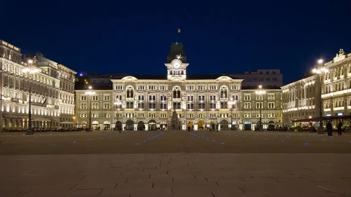

sab 3 ott · dalle 16:00
Presentazione del volume "Porcellane europee a Trieste. La collezione Giovanni Lokar"
Sabato 3 ottobre 2026, alle ore 16, presso la sala "Giorgio Costantinides" del Museo Sartorio di Trieste, sarà presentato il volume di Andreina d'Agliano e Alessandro Biancalana, con la collaborazione di Laura Pergola, "Porcellane europee a Trieste. La collezione Giovanni Lokar"…
 Indicazioni
Indicazioni
- Costi e prenotazioni
- Costo non indicato · Prenotazione non indicata
- Programma
- Programma da verificare. Apri la fonte ufficiale per orari e possibili aggiornamenti.
- In caso di maltempo
- Nessuna indicazione specifica pubblicata.
- Note
- Acquisito automaticamente dalla fonte.
L’EVENTO
Descrizione completa
Sabato 3 ottobre 2026, alle ore 16, presso la sala "Giorgio Costantinides" del Museo Sartorio di Trieste, sarà presentato il volume di Andreina d'Agliano e Alessandro Biancalana, con la collaborazione di Laura Pergola, "Porcellane europee a Trieste. La collezione Giovanni Lokar" (Milano, Chimera Editore, 2026). Saranno presenti il collezionista, dott. Giovanni Lokar, e gli autori.
Sarà presente per un saluto il Sindaco di Trieste.
Il volume è in due tomi, entrambi bilingui italiano/inglese.
Il primo tomo (229 pagine) è dedicato ai saggi di approfondimento e vede le firme dei principali esperti mondiali di porcellana europea: dopo la presentazione del donatore, Giovanni Lokar, oltre ai curatori si susseguono i nomi di Errol Manners, Maureen Casidy-Geiger, Giovanni de Girolamo, Barbara Beaucamp-Markowsky, Cristina Maritano, Angela Caròla-Perrotti).
Il secondo tomo (585 pagine) è dedicato al catalogo completo delle opere presenti nella collezione, suddiviso per ambiti geografici e manifatture ordinate in successione cronologica.
La raffinata Collezione di porcellane delle più prestigiose manifatture europee, frutto di 60 anni di acquisti di Giovanni Lokar, è entrata, grazie alla donazione decisa dal suo creatore, nel patrimonio del Museo Sartorio, dove è visitabile dal 13 dicembre dello scorso anno in due sale appositamente allestite al secondo piano del Museo.
L’ampia collezione di Giovanni Lokar (composta in totale oltre 550 pezzi di ben 80 manifatture diverse) consente di ripercorrere l’intera storia della porcellana europea, a partire dal suo avvio nel 1709 in Germania, e di approfondirne la produzione in particolare lungo tutto il XVIII secolo, spingendosi anche nella prima metà del secolo seguente.
Sono oltre 80 le manifatture documentate almeno da un oggetto, dall’ambito tedesco all’Italia e all’Europa intera, dalla Spagna alla Repubblica Ceca, dalla Francia alla Danimarca, dal Regno Unito alla Russia. Si tratta dunque della collezione più completa in termini di varietà di manifatture nell'ambito europeo del Settecento.
Lo studio e la pubblicazione della raccolta di porcellane europee costituita dal dottor Giovanni Lokar si è rivelato un compito impegnativo ma affascinante fin dagli inizi dell’opera.
Il vasto numero degli oggetti, le loro disparate provenienze, la problematicità di alcuni di essi, solo per evidenziare alcuni aspetti, hanno costituito da una parte l’interesse ma anche la difficoltà nel catalogare questa collezione.
Trattandosi di una panoramica vastissima delle maggiori manifatture di porcellana europea del XVIII e XIX secolo, è stato deciso di dedicarvi due volumi, uno per i saggi e un secondo riservato alla catalogazione di tutti gli oggetti, dalla primissima produzione di Meissen, dove iniziò la prima fabbrica europea di porcellana dura (contenente caolino), fino alla produzione ottocentesca di alcune manifatture russe e dell’Europa orientale,
L’opera è stata portata avanti per quasi quattro anni dai due curatori, Andreina d’Agliano e Alessandro Biancalana, affiancati da un editore e da un gruppo di lavoro che è riuscito a comprendere e sottolineare il valore di questa collezione, didascalica ma al contempo preziosa, originale per le scelte del collezionista, concentrato soprattutto sulla produzione italiana, di cui la raccolta contiene il maggior numero di porcellane Vezzi in raccolta privata (e oggi pubblica), a cui si accompagnano altri pezzi magistrali delle fabbriche della nostra penisola. Dal catalogo di questa prestigiosissima collezione traspare anche un valore europeo, sottolineato dalle importanti fabbriche tedesche, austriache, francesi e inglesi - e non solo - rappresentate e i cui preziosi esemplari sono oggi patrimonio pubblico grazie alla generosa donazione del dottor Lokar al Museo Sartorio di Trieste.
Il risultato finale è eloquente: i due volumi forniscono a collezionisti ed esperti, ma anche alla curiosità del pubblico, un panorama variegato con il quale potersi confrontare e trarre spunti interessanti, grazie alla intelligente generosità dei coniugi Lokar verso la propria città, Trieste.
Ingresso libero fino a esaurimento posti.
IL PROGRAMMA
Programma e orari
Appuntamenti raccolti dalle fonti elencate. Dove manca un orario, non è ancora disponibile in questa scheda.
Programma pubblicato
- Dal 2026-10-03 al 2026-10-03
INFORMAZIONI UTILI
Prima di partire
- Controllare la fonte prima di partire.
ORGANIZZAZIONE